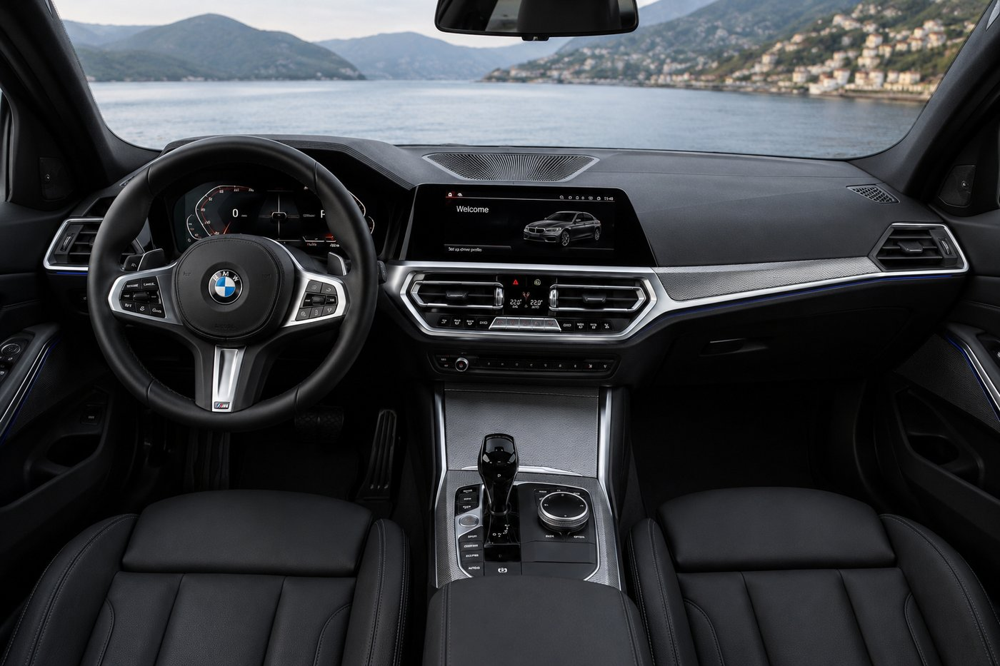
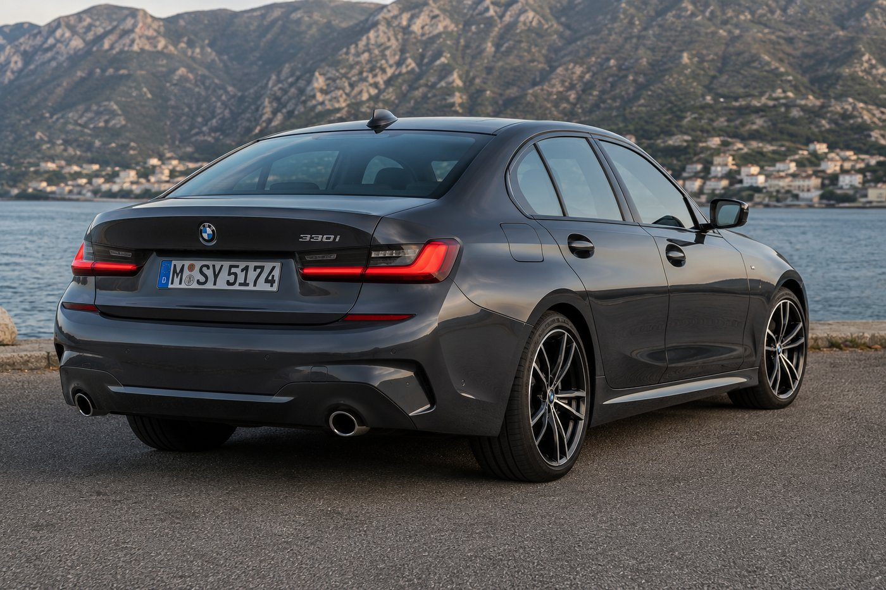

Everyone wants to talk about the M3 when the conversation turns to BMW's 3 Series. Fair enough, it's the halo car, the one with the badge and the numbers that get quoted at dinner parties. But most people who actually buy a 3 Series don't buy the M3. They buy something closer to the 330i, and honestly, that's the smarter call for almost everybody who isn't chasing lap times.
The G20 generation launched back in 2019 and it's still the current 3 Series today, which tells you something about how well BMW got the fundamentals right the first time. The 330i sits right in the middle of the lineup: enough power to feel genuinely quick, none of the compromises that come with the high performance trims, and a price that doesn't require explaining to your accountant.
What's actually under the hood
The 330i runs a 2.0 liter turbocharged four cylinder, BMW's B48 engine, putting out 255 horsepower and 295 lb ft of torque. Power goes through an 8 speed automatic, and you can get it as rear wheel drive or with xDrive all wheel drive. Zero to 60 comes in around 5.6 seconds depending on the drivetrain, and top speed is limited to 155 mph the way most BMWs are.
None of those numbers will win an argument against a proper sports car. What they do is make the 330i feel effortless in the way a lot of turbocharged fours don't. Torque shows up early and stays flat through the mid range, so overtaking on a two lane road doesn't require a downshift and a running start. It's the kind of engine that makes a car feel faster than its spec sheet suggests, which is arguably more useful day to day than outright straight line speed.
The interior is where the real upgrade happened
If you sat in an F30 3 Series and then climbed into a G20, the interior is where you'd notice the generational jump the most. The G20 brought a redesigned cockpit with the 12.3 inch digital instrument cluster and a center screen running BMW's Live Cockpit Professional, angled toward the driver in a way that actually makes sense instead of feeling like an afterthought bolted to the dash.
Advertisement
Material quality holds up too. The M Sport package adds sportier seats, some extra trim, and the leather wrapped wheel with the paddle shifters, but even without it the cabin feels like it belongs in a car costing more than the 330i actually does. BMW also kept physical climate controls, which after a few years of touchscreen-only dashboards from other manufacturers feels less like nostalgia and more like the correct call.

Why the "boring" trim is the right call
There's a certain type of car buyer who won't consider a 3 Series unless it has an M badge on the trunk, and that's a shame, because the 330i is arguably the more well rounded car. The M340i and M3 trade ride comfort for sharper handling and bigger numbers, which is exactly what you want if you're doing track days. Most owners aren't doing track days. Most owners are commuting, running errands, and occasionally enjoying a good back road on the weekend, and the 330i is tuned for exactly that kind of life without feeling like it's holding anything back.
The suspension is firm enough to feel connected to the road without turning every pothole into a punishment. Steering weight is well judged, not artificially heavy the way some sport modes fake it. And because it's not chasing the last tenth of a second around a track, BMW could tune the chassis for real world roads instead of a closed circuit.

The verdict
Ten years into this generation, the 330i still does what a 3 Series is supposed to do: it's quick enough to be genuinely fun, comfortable enough to live with every day, and built well enough that the cabin doesn't feel like a compromise next to cars costing considerably more. It won't show up on anyone's poster wall, and that's fine. Most cars people actually enjoy owning aren't the ones on the poster. They're the ones that get it right every single day, which is exactly what the 330i has been doing since 2019.